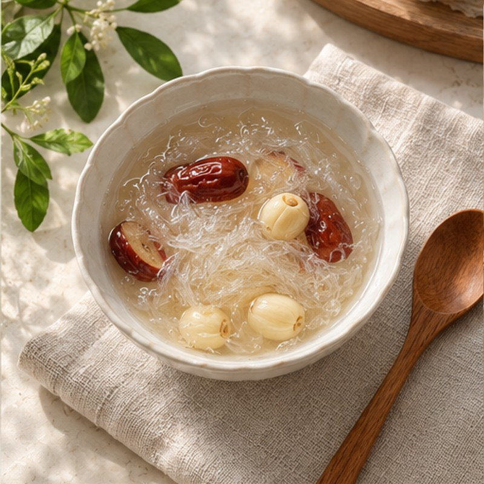

BÀI VIẾT NỔI BẬT · SỐNG KHỎE
Yến sào nên dùng
vào thời điểm nào?
Một buổi sáng chậm rãi hay một khoảng nghỉ trong ngày đều có thể trở thành khoảnh khắc chăm sóc bản thân. Điều gì khiến thói quen ấy phù hợp với bạn?
12.09.2026 · 4 phút đọc
ĐỌC CÂU CHUYỆN